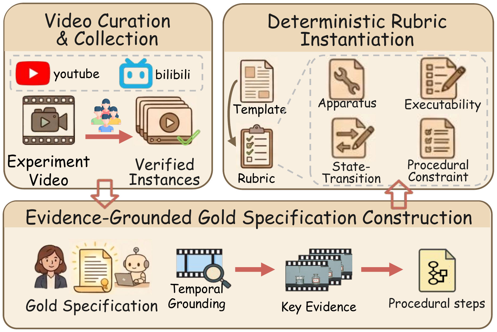
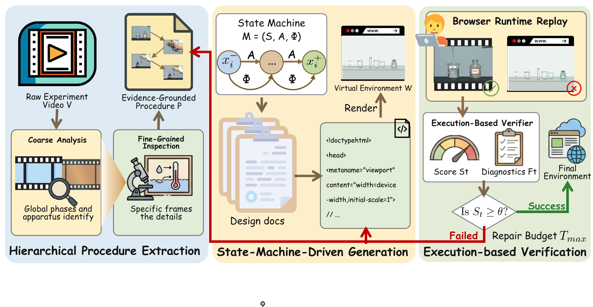
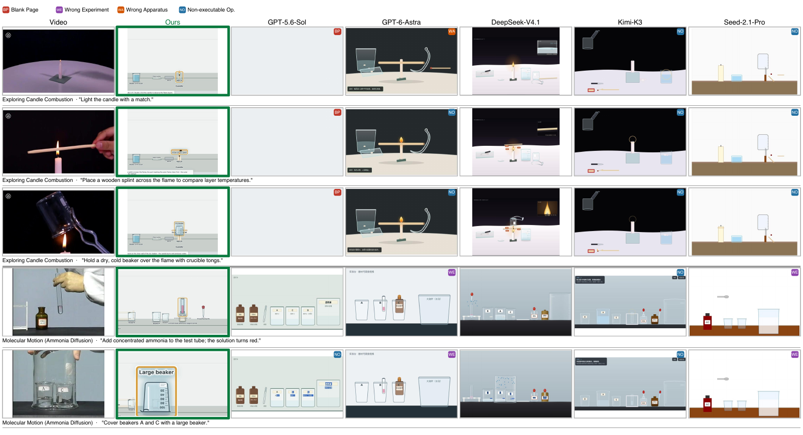

Turning Real-World Experiment Videos into Interactive Virtual Experiments
Science experiment videos demonstrate how experiments are performed, but offer no direct interaction for learners. Turning them into virtual experiments requires not only reproducing the observed apparatus and state changes, but also enforcing the preconditions governing each operation. We introduce Lab2Sim, a benchmark of 218 science experiment videos with evidence-grounded specifications and 11,881 rubric items.
To address this task, we propose EduVideo2Code, which extracts experimental procedures hierarchically, encodes them as explicit state machines to guide code generation, and refines the resulting pages through execution-based verification. Existing multimodal models readily generate runnable pages — yet no model reaches 60% apparatus fidelity. EduVideo2Code consistently improves all four evaluation dimensions across two backbone models, with apparatus fidelity gains of up to 24.15 points.
Left: the original “hydrogen burns in air” demonstration video from the benchmark (3D animation, 26 s). Right: the virtual experiment EduVideo2Code generates from it, operated live in the browser — light the hydrogen with the match, pull the match away, invert the dry beaker over the pale-blue flame, and watch water mist build up on the beaker wall, exactly as in the video.
From 500+ public chemistry, physics, and biology videos on Bilibili and YouTube, 218 survived manual screening. A GLM-5.3-series assistant drafts a gold specification for each — apparatus, ordered steps, preconditions, state transitions — and human reviewers verify every draft against the source video (~13 min per video). Fixed templates turn each specification into executable rubric items, plus violation probes that skip, reorder, or misuse steps.

Click to enlargeIs every annotated piece of apparatus present and correctly identified? Spatial layout is not scored — content over pixels.
Can each demonstrated step be performed on the correct object and complete as specified, checked by replaying the procedure?
Does the page block a step whose precondition does not hold — and explain why? Violation probes skip, reorder, or misuse steps.
Do initial states and the states after each step match the video, e.g. a solution turning from colorless to pink?
Video understanding on one side, interactive implementation on the other — bridged by an explicit experiment state machine M = (S, A, Φ) where states assign values to tracked object attributes, operations implement steps, and Φ guards each operation with its precondition.

Click to enlargeA coarse pass finds phases, apparatus, and step order; a fine pass re-inspects marked segments with dense, high-resolution sampling for instrument readings, liquid levels, and connections. Every step must cite supporting frames — unverifiable steps are dropped.
The procedure compiles into M = (S, A, Φ). Each operation becomes a direct-manipulation gesture — dragging, pouring, lighting — and each state a visual appearance. Learners perform the experiment instead of replaying an animation. Three design documents (science, layout, asset list) record evidence and asset provenance.
A separate verifier runs the page in a browser: it compares apparatus with the video, attempts invalid operations, and replays the procedure, comparing screenshots and state summaries against video evidence. Below the threshold θ = 0.8, diagnostic feedback triggers targeted repair — up to Tmax = 10 rounds (5.3 on average).
All 218 instances, six baselines with direct video-to-code generation vs. EduVideo2Code on two backbones. AF/PE/PCC/STF in %, higher is better except OFR.
| Model | Rubric dimensions | Diagnostics | ||||
|---|---|---|---|---|---|---|
| AF ↑ | PE ↑ | PCC ↑ | STF ↑ | OFR ↓ | RR ↑ | |
| Direct generation | ||||||
| Seed-2.1-Pro | 20.62 | 20.11 | 25.14 | 24.65 | 31.09 | 93.12 |
| GLM-5.3-Flash | 40.44 | 22.58 | 16.33 | 34.48 | 12.90 | 94.95 |
| GPT-6-Astra | 41.81 | 24.06 | 44.83 | 37.88 | 22.28 | 96.79 |
| GPT-5.6-Sol | 36.61 | 32.79 | 32.56 | 41.68 | 28.52 | 96.79 |
| DeepSeek-V4.1-Flash | 59.09 | 36.48 | 36.67 | 41.83 | 3.14 | 100.00 |
| Kimi-K3 | 54.23 | 28.57 | 22.22 | 44.86 | 8.04 | 100.00 |
| EduVideo2Code (ours) | ||||||
| + GLM-5.3-Flash | 61.32+20.88 | 37.17+14.59 | 38.33+22.00 | 49.63+15.15 | 7.10−5.80 | 100.00+5.05 |
| + GPT-5.6-Sol | 60.76+24.15 | 41.40+8.61 | 33.75+1.19 | 45.45+3.77 | 12.38−16.14 | 100.00+3.21 |
All eight systems exceed 93% RR, yet AF spans 20.62 → 61.32 and PE 20.11 → 41.40. A page that loads and responds to clicks is not a page that reproduces the experiment.
For every system AF > PE. Executing steps is also different from guarding them: Kimi-K3 executes well (OFR 8.04) but enforces few constraints (PCC 22.22), while GPT-6-Astra leads PCC at 44.83.
AF +20.88 (GLM-5.3-Flash) and +24.15 (GPT-5.6-Sol), RR to 100%. Gains vary by dimension: PCC improves by 22.00 for one backbone but only 1.19 for the other.
| Variant | AF ↑ | PE ↑ | PCC ↑ | STF ↑ | OFR ↓ |
|---|---|---|---|---|---|
| Direct generation | 40.44 | 22.58 | 16.33 | 34.48 | 12.90 |
| EduVideo2Code (full) | 61.32 | 37.17 | 38.33 | 49.63 | 7.10 |
| w/o HPE | 48.24−13.08 | 23.53−13.64 | 22.03−16.30 | 38.10−11.53 | 11.61+4.51 |
| w/o SMG | 60.03−1.29 | 30.52−6.65 | 32.20−6.13 | 37.50−12.13 | 10.32+3.22 |
| w/o EBV | 59.77−1.55 | 25.81−11.36 | 22.41−15.92 | 40.05−9.58 | 14.84+7.74 |
Removing any stage worsens every metric; the three stages depend on one another rather than contributing independently. HPE matters most for AF / PE / PCC, SMG mainly secures correct state transitions, and without EBV the extra interactions specified by the state machine go unrepaired — OFR even rises above direct generation.
Candle combustion and molecular motion, evaluated by replaying the demonstrated operations on pages from six baselines and EduVideo2Code.

Click to enlargeA candle-combustion page loads without errors — then renders only “[object Object]”. Technical executability does not guarantee a meaningful scene.
For molecular motion, baselines generate a potassium-permanganate or fuchsine diffusion setup instead of the demonstrated ammonia + phenolphthalein — coherent pages of the wrong experiment.
A balance-like stand and a bent tube appear where the video shows a candle, a knife, and crucible tongs — undermining every later interaction.
Visually plausible scenes where lighting the candle or covering the beaker triggers nothing. EduVideo2Code instead reproduces the demonstrated operations and their states — e.g. the solution turning red after ammonia is added.
@article{hei2026lab2sim,
title = {Lab2Sim: Turning Real-World Experiment Videos into
Interactive Virtual Experiments},
author = {Hei, Xusen and Chen, Jiali and Yang, Jinyu and Cai, Yi},
journal = {arXiv preprint arXiv:2611.02928},
year = {2026}
}Lab2Sim sources its videos from public instructional content on Bilibili and YouTube; all apparatus assets in generated pages record their source and license. The benchmark is released for research purposes.